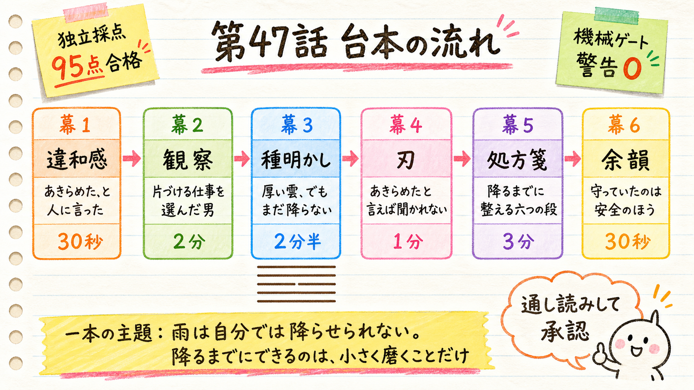

HaQei / アニメと易経 ─ 第47話 台本レビュー（3種承認の2つ目）
怪獣8号（日比野カフカ）× 小畜（しょうちく）。承認いただいた痛みの一文から書きました。通し読みして、公開してよいかを決めてください。

小畜という卦は、「厚い雲が出ている。それなのに雨が降らない」という一行から始まります。そして注釈が、はっきりこう続けます—— 状況は不利ではない。ただ、大きく動く時ではない。いまできるのは準備だけだ。
つまりこの卦は「あなたは失敗した」とは一言も言っていません。言っているのは「まだ降っていない」だけです。 そのうえで象辞が、待つあいだにやることを一つだけ指定します——外に現れる自分の姿を、細かく磨く。志を高く持て、ではありません。
※ここに出るのが実際のナレーション本文です。字幕もこの文から作られます。金の枠 ＝ 六爻図カット
V_01_01あきらめた、と人には言いました。でも今やっている仕事は、あきらめたはずのものの、すぐ隣にあります。関係のない仕事に就く勇気が、たぶん、いちばん無かったんです。怪獣8号の日比野カフカは、その、すぐ隣で32歳になりました。
V_01_02近くにいるのは往生際が悪いからだと、ずっと思っていました。でも3000年前の本には、この、すぐ隣にいる時期のことだけを書いた形があるんです。夢の話ではなく、雨の話として書いてあります。今日は、その話です。
V_02_01子どもの頃、彼が住んでいた街が怪獣の被害に遭いました。幼馴染の亜白ミナと、二人で防衛隊員になろうと決めます。2人で、怪獣を全滅させよう。そういう約束でした。子どもが瓦礫の前でする約束としては、ずいぶん具体的です。
V_02_02ミナのほうは、その約束を果たします。日本防衛隊 第3部隊の隊長になりました。最強クラスと呼ばれる人です。カフカは、試験に合格できないまま月日が流れて、そして気がついたときには、受験できる年齢を過ぎていました。
V_02_03落ち続けたことと、年齢を超えたことは、別々に起きています。夢が終わる瞬間というのは、たいてい不合格の通知ではなくて、もう受けられないと気づく日のほうなんです。そこで彼が選んだ職場が、この話の芯にあります。
V_02_04モンスタースイーパー社。防衛隊が倒した怪獣の死体を、解体して、処理して、清掃する会社です。倒すところまでが防衛隊で、そのあとの現場に入るのが彼の会社。あきらめたはずの世界から、いちばん離れにくい場所を選んでいます。
V_02_05そこへ、市川レノという18歳が現れます。これから受ける側の人間です。同じ壁の手前に立っているのに、二人のあいだで違うのは、残っている時間だけでした。そのレノが、カフカに告げます。入隊試験の年齢制限が、33歳未満まで引き上げられた、と。
V_03_01易経という本があります。人に起きる変化のパターンが64個、順番に並べて記録されている、古代中国の本です。その中に、小畜、という形があります。小さく、蓄える、と書きます。名前からして、すでに派手さがありません。
V_03_02これが小畜の六本の線です。下から、陽、陽、陽、陰、陽、陽。四番目の一本だけが切れています。五本の強い線を、たった一本の弱い線が押しとどめている形です。強い側が負けているのではなく、まだ通してもらえていない。
V_03_03上の三本が風で、下の三本が天。風が空を渡っていく絵になっています。風は、雲を寄せ集めることまではできる。でも、それ自体は空気なので、大きな結果までは作れない。集められるが、降らせられない。それがこの形の立ち位置です。
V_03_04そして卦の言葉が、いきなり変なんです。厚い雲が出ている。それなのに、雨が降らない。西の郊外から来た雲だ、と。そう書いてあるだけで、なぜ降らないのかは書いていません。降らない理由ではなく、降っていないという事実だけが置いてあります。
V_03_05注釈は、はっきりこう書きます。状況は不利ではない。最終的にうまくいく見込みもある。ただ、まだ障害があって、いまできるのは準備だけだ。大きく動く時ではない、と。不利ではない、という一言が、私にはかなり意外でした。
V_03_06つまりこの形は、あなたは失敗した、とは一言も言っていないんです。言っているのは、まだ降っていない、それだけ。降っていない時期を、失敗と読み替えていたのは、私たちのほうでした。誰も判定していない期間を、自分で判定していたわけです。
V_03_07では、その時期に何をするのか。象の言葉はこうです。君子は、外に現れる自分の姿を、細かく磨く。外の世界に大きな効果を出せない時期にできるのは、それだけだ、と注釈が続けます。志を高く持て、ではなくて、姿を細かく磨け、なんです。
V_03_08そして、いちばん上の線で、ようやく雨が降ります。雨が来る、休息がある。ただし、と続くんです。これは、人柄が持続的に効いたことによる。小さな効果が積み重なった結果だ、と。雨のほうを、溜めた側から説明しているわけです。
V_03_09年齢制限が引き上げられたのは、彼の手柄ではありません。あれは時が動いただけです。この本も、時の到来を人の功績にはしていません。ただ、時とはまったく別のところで、溜まっていたものがありました。それが何だったのかは、最後にお話しします。
V_04_01ここで、自分の話に戻ります。私たちは、続けている人に、で、どうなったの、と聞きます。悪気はありません。ただ、あきらめたと聞いた側は、たいてい少し安心した顔をする。私も、人にその顔をしてきました。
V_04_02だから私が、あきらめた、と言ったのも、報告ではなく手続きでした。期待を降ろしてもらえば、その質問は来なくなります。そしてその空気に甘えて、私は、近くにいた年月のあいだ、磨くほうはほとんどやっていません。近くにいただけです。
V_05_01小畜の六本の線は、降るまでの過ごし方の階段になっています。いちばん下は、自分の道に戻る。進むも退くも自由でいられる場所へ戻ることだ、と注釈は書きます。力ずくで何かを取ろうとしないのが賢い、とも書いてあります。
V_05_02ここでやめるのは、一発で取り返す動きを探すことです。代わりに始めるのは、いまの持ち場の作業をひとつ選んで、明日も同じ手順でできる形に整えること。磨く、という言葉の実物は、たぶんこのくらい地味なものだと思います。
V_05_03二番目は、引き戻される、です。自分と同じような人の例を見て、この道がいま塞がっていると分かる。だから無理に前へ出ない。一人で壁に頭を打ちつけるのをやめて、同じ壁に当たった人の実例を、一つだけ具体的に調べてみる。それが二番目の段です。
V_05_04三番目が、いちばん怖いです。車輪の輻が外れる。そして、夫と妻が睨み合う。時でないのに力ずくで押すと、壊れるのは外の壁ではなく、いちばん近い人との関係のほうでした。夢を追う話が、家の中の喧嘩に化ける瞬間を、この本は名指ししています。
V_05_05注釈は、この喧嘩を、運命からの合図をまだ聞いていない徴候だと書きます。だから、身近な人と言い争いになったら、相手を説得しにいかない。そこで手を止めて、いまが本当に押す時期なのかを見直す。喧嘩は失敗の原因ではなく、時計だったわけです。
V_05_06四番目は、誠があれば、血は消え、恐れは去る。注釈が言っているのは、利害を抜いた真実の力です。自分を大きく見せる説明をやめて、いつ、何を、どれだけやったか。その三つだけで、一度伝えてみる。評価の要求も、卑下も、付けないで。
V_05_07五番目は、隣人において富む、です。忠実さでつながると、豊かさは自分の中に溜め込まれず、分け合われる、と書いてあります。独りで抱えて機会を待つのをやめて、自分が持っているものを、隣の一人に先に渡してみる。溜めることと、抱え込むことは違います。
V_05_08いちばん上で、ようやく雨が降ります。ただ、この段だけは警告です。月はほとんど満ちている。ここで押し続ければ、凶。降った直後に取り返そうとするのをやめて、降ったら、まず休む。せっかく降ったのに、と思うところが、いちばん危ないところでした。
V_05_09六本を通して、この形は一度も、もっと頑張れとは言っていません。雨は、自分では降らせられない。降るまでにできるのは、外に現れる自分の姿を、小さく磨くことだけです。それだけ、と書いてあることが、私にはむしろ救いでした。
V_06_01解体の現場は、怪獣の体をいちばん近くで見る場所でした。カフカがそこで得た怪獣についての知識は豊富で、のちに彼は、その知識を活かしたサポートと情報提供で、隊を支えることになります。片づけていた年月が、そのまま持ち物になっていたわけです。
V_06_02近くにいること自体は、未練ではありません。ただ、磨きもせずに近くにいるなら、守っているのは夢ではなく、期待されない安全のほうです。私が守っていたのは、たぶん、後者でした。
| 場所 | 何を狙ったか | 気になるなら |
|---|---|---|
| 冒頭（V_01_01） | 承認いただいた痛みの一文をほぼそのまま置き、4文目でカフカへ着地。作品説明から入っていません。 | 刺さらなければここだけ書き直します（他は流用できます） |
| 幕4の刃（V_04_01/02） | 刃を冒頭と同じ場面の中で返しました。「聞く側にも回っている」を先に置き、そのあと自分へ。社会の空気と自分の両方を刺しています。 | 説教くさければ2文目を削ります |
| 幕6の棘（V_06_02） | 要約で閉じず、条件を限定した断言で閉じました。「近くにいること自体は未練ではない。ただ、磨きもせずに近くにいるなら——」 | 言い切りが強すぎる/弱すぎる場合はここだけ調整します |
| 検査 | 結果 | 中身 |
|---|---|---|
| 独立採点（fork・codex） | 95 / 100 | 処方箋30・具体18・風刺17・自然20・構成10。冒頭ゲートと作品への橋渡しゲートはいずれも通過 |
| ブラインド比較（bon） | 98 / 100 で採用 | もう1案は95点。「幕2で知識を明かしてから幕3で最後まで伏せると予告する＝空約束と重複」を指摘され、採用案はその欠陥がない |
| 機械ゲート（preflight） | PASS・警告0 | 29シーン／幕1=29秒／対比の投入=89秒／推定総尺440秒／AI臭0.0／六爻図1件／数字表記／読み辞書 |
| 作中事実 | 21件すべて一次確認 | ja.wikipedia「怪獣8号」＋pixiv百科事典「日比野カフカ」。因果を含む主張は出典の段数と台本の段数を並記して記録（content/067/fact_check.md） |
これは3つの承認の2つ目（台本）です。ここを通すと、音声・画像・モーション・レンダへ進み、次に止まるのは完成動画の通し視聴です。
音声（AivisSpeech morioki）→ 絵コンテ → 画像 → 六爻図 → モーション → レンダまで自走します。次に止まるのは完成動画です。
V_01_01/V_01_02 のみ差し替えます。刺さらない理由を一言（「その後ろめたさは自分の話じゃない」等）いただければ、却下台帳に記録してから直します。
シーンID（V_04_02 など）か「幕5の四番目」のような指定で構いません。該当シーンだけ改稿し、機械ゲートと独立採点をかけ直します。
企画（痛みの一文）は生かしたまま、構成から作り直します。何が駄目だったかを一言だけ聞かせてください。
第47話 / content/067 / 怪獣8号（日比野カフカ）× 小畜 / H58 痛み先頭転換コホート5本目 ─ 2026-07-29 作成。
公開枠は 2026-08-11（月）04:00 JST を確保済み。